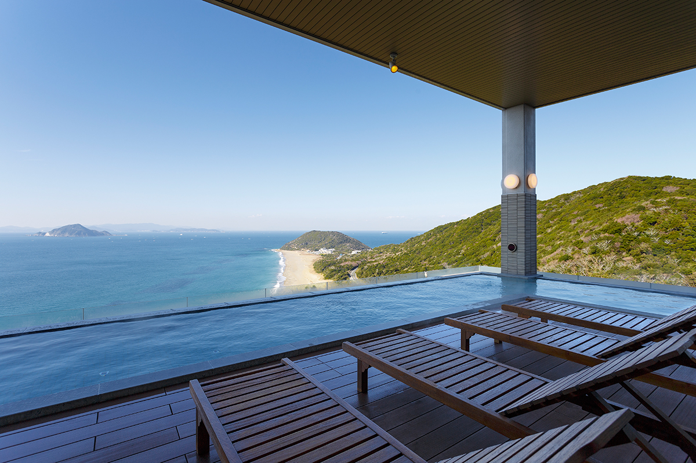
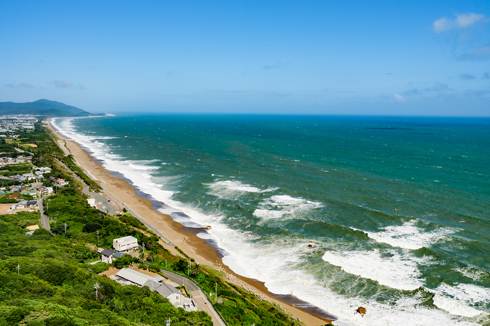
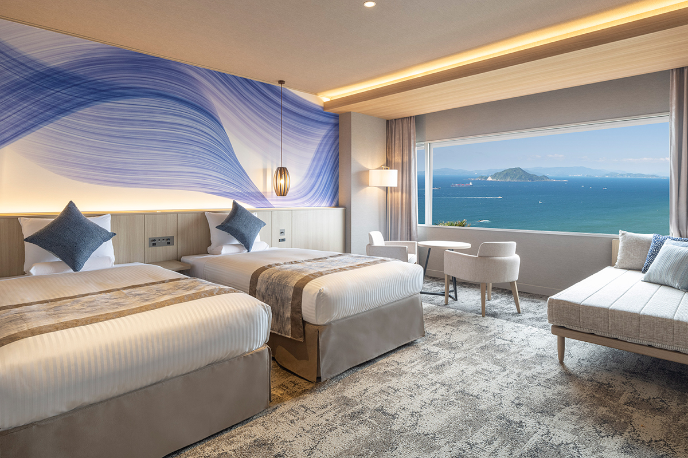
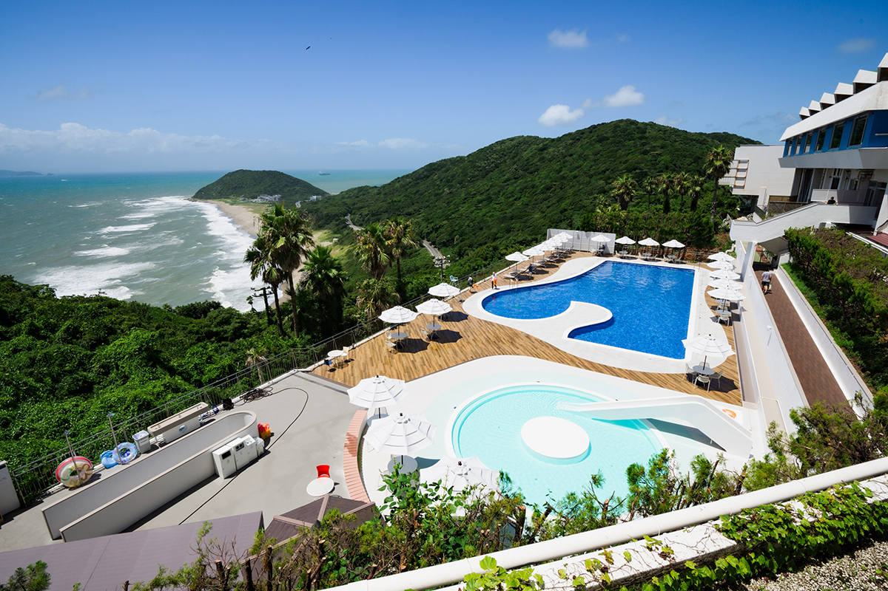
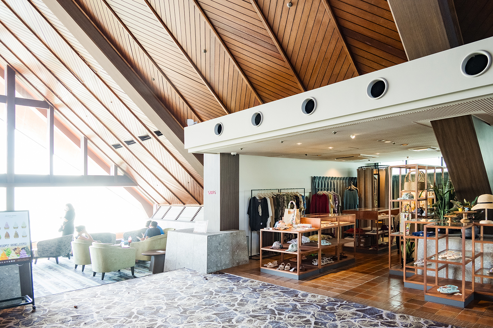
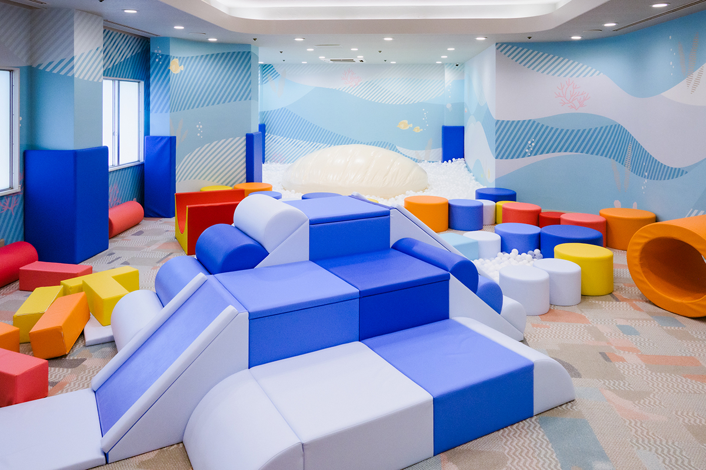
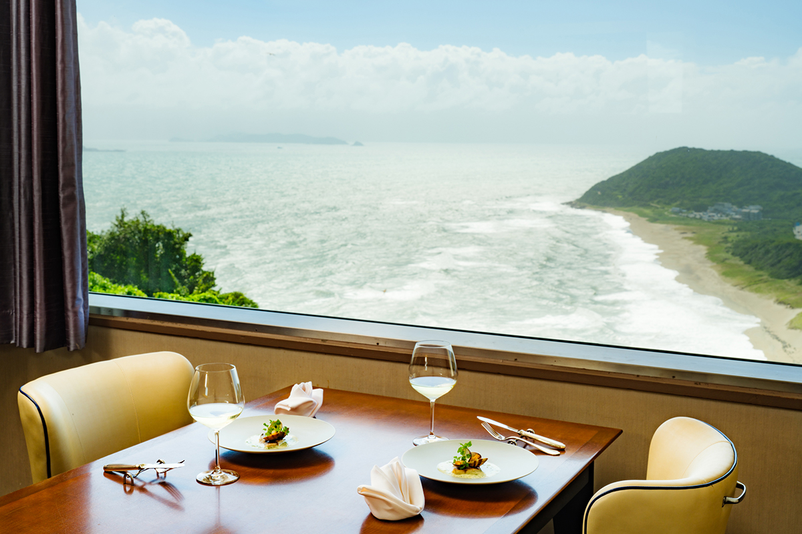
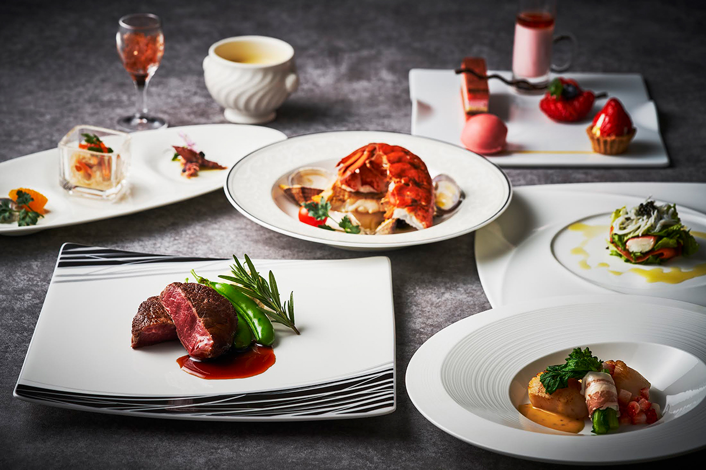
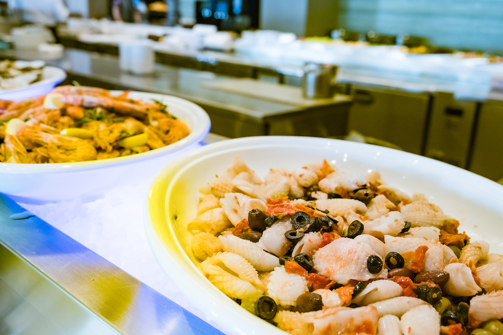

Префектура Айти · Тахара · где остановиться
Irago Ocean Resort: отель над тремя морями на полуострове Ацуми

Полуостров Ацуми с трёх сторон омывает море, и на его оконечности, на холме над водой, стоит Irago Ocean Resort. Семейный курорт с многолетней историей в июле 2023 года открылся после большого обновления, и море отсюда видно почти из любой точки здания.
Отель
Курорт, где море всегда рядом
Полуостров Ацуми вытянулся на юго-востоке префектуры Айти. С юга его омывает Тихий океан, с севера залив Микава, с запада залив Исэ. На зелёном холме у самого конца полуострова, откуда видны все три моря, стоит Irago Ocean Resort, курортный отель города Тахара. С первых лет его особенно любят семьи с детьми.

В июле 2023 года отель открылся после обновления. Идея была в том, чтобы гость сильнее чувствовал природу вокруг полуострова, поэтому переделали почти всё: номера, открытый бассейн, рестораны. Появилось кафе SARAS CAFÉ с видом на море, а рядом с ним, без стен и перегородок, магазин и детский парк.
Главная гордость отеля это открытый онсэн на высоте 100 метров над уровнем моря. Вокруг, сколько хватает глаз, только вода и небо, а по коже пробегает морской ветер. Всего здесь восемь видов купален, среди них ванна, в которой можно лежать, джакузи и сауна.
Номера
Ни одного номера без вида
Все номера смотрят на море. Обновлённые номера категории «премьер» оформлены спокойно, в тонах моря и песчаного пляжа. Из восточных номеров встречают рассвет, из западных провожают закат. Неудачных номеров по виду здесь, по сути, нет, и такое встречается нечасто.

Семьям
Чем заняться весь день
Скучать детям и взрослым не придётся. Летом работает открытый бассейн, есть детский парк, магазин, настольный теннис, игровые автоматы и прокат велосипедов. В лобби-лаунже стоит аппарат, из которого гости сами наливают себе вино.

Магазин при обновлении переехал на новое место. В нём продают продукты, сделанные на полуострове, и вещи с курортным настроением.

Детский парк тоже появился в 2023 году. Здесь бассейн с шариками площадью 30 квадратных метров и скалодром в виде кораллов, а площадки разделены по возрасту: для детей 4–8 лет и для малышей до трёх лет. Парк рассчитан на детей от года до восьми лет, вход в 2023 году стоил 300 иен с человека, платят и ребёнок, и взрослый. Открыт он в день заезда с 14:00 до 17:30 и в день выезда с 10:00 до 12:00.

Еда
Два ресторана с продуктами полуострова
Ужинать можно в ресторане-буфете IRAGO BOLD KITCHEN или в TRIDENTE, где подают курсовое меню японской, французской или китайской кухни. Полуостров Ацуми славится как один из самых богатых сельскохозяйственных районов страны, и оба ресторана берут местные овощи и рыбу из ближних вод. Японские, западные и китайские блюда готовят разные повара.


В IRAGO BOLD KITCHEN блюда готовят на открытой кухне, всего около 70 видов. Среди них много местного: жареная свинина из Тахары, темпура из овощей полуострова. Есть и большое детское меню. В TRIDENTE обед и ужин нужно заказывать не позже чем за два дня.

Отель задуман как курорт, где хорошо и взрослым, и детям, и в 2023 году в нём обещали меняться и дальше.
Irago Ocean Resort
- Адрес
- префектура Айти, Тахара, Хии-тё, Хонэяма, 1460-36
- Телефон
- +81 531-35-6111
- Номера
- 148
- Цены / Вход
- «стандарт твин» с завтраком и ужином от 15 000 иен на человека, «премьер фэмили твин» от 17 000 иен (налог и сервисный сбор включены, курортный налог за онсэн отдельно)
- Заезд / выезд
- 15:00 / 10:00
- Как добраться
- от станции Тоёхаси (JR или Мэйтэцу) бесплатным автобусом отеля около 70 минут; на машине от развязок Хамамацу-ниси или Тоёкава скоростной дороги Томэй около 90 минут; паромом в порт Ирако с полуострова Тита (порт Кова, 50 минут) или из порта Тоба в префектуре Миэ (55 минут), от порта до отеля 5 минут на машине отеля по предварительной заявке
TRIDENTE
- Телефон
- +81 531-35-6114 (10:00–18:00)
- Часы работы
- обед 12:00–14:00 (последний заказ 13:30), ужин 17:30–21:00, только по записи не позже чем за два дня
IRAGO BOLD KITCHEN
- Телефон
- +81 531-35-6114 (10:00–18:00), бронь на тот же день +81 531-35-6111
- Часы работы
- завтрак 7:00–9:00 (вход до 8:30), ужин в две смены 17:30–19:00 (вход до 18:15) и 19:15–20:45 (вход до 20:00), обед только летом
Фото: Кэйитиро Нацумэ.